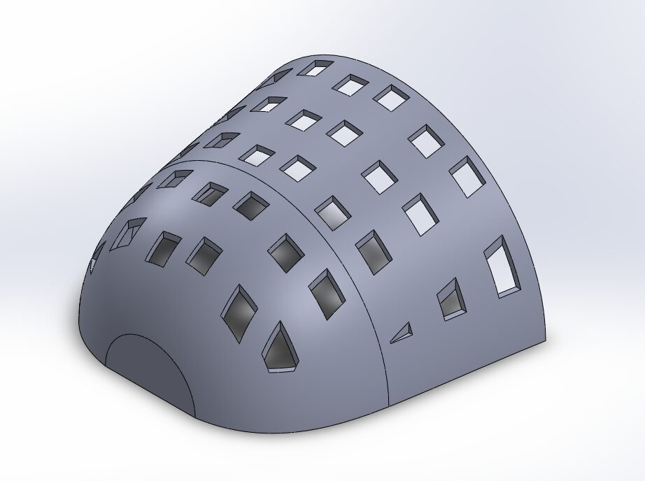
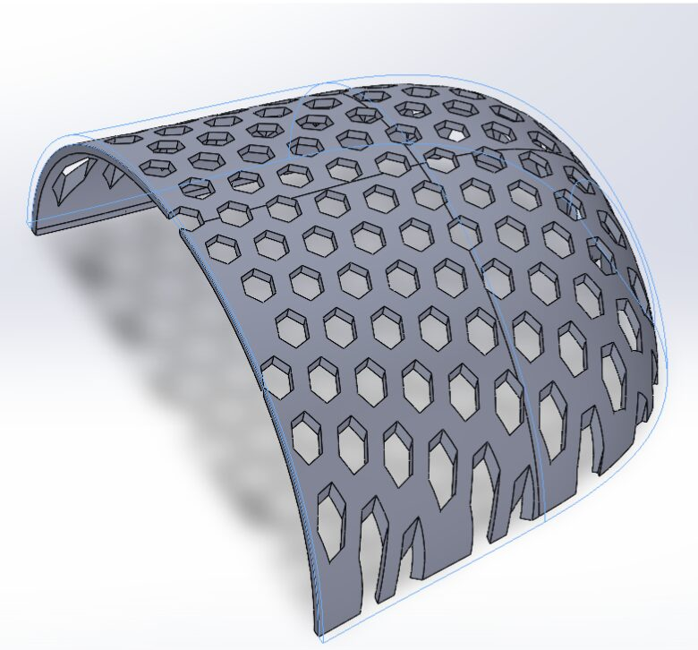
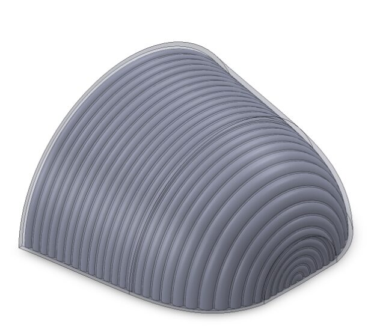
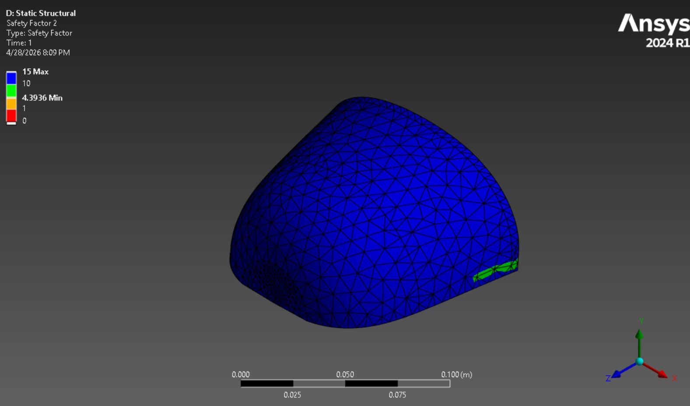
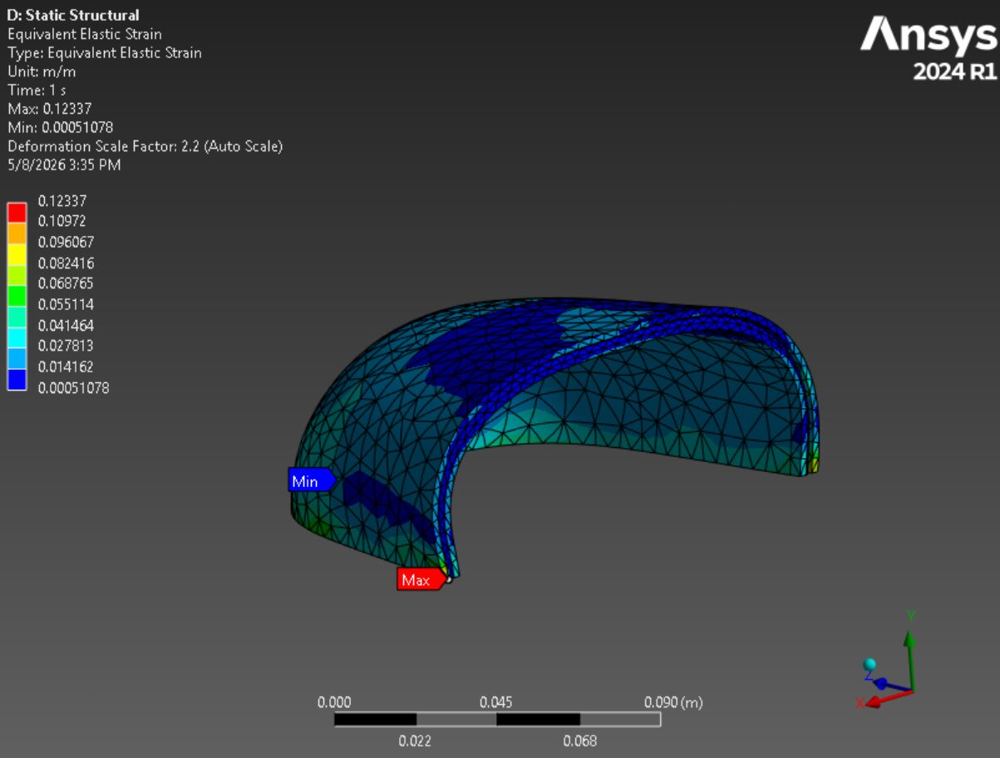
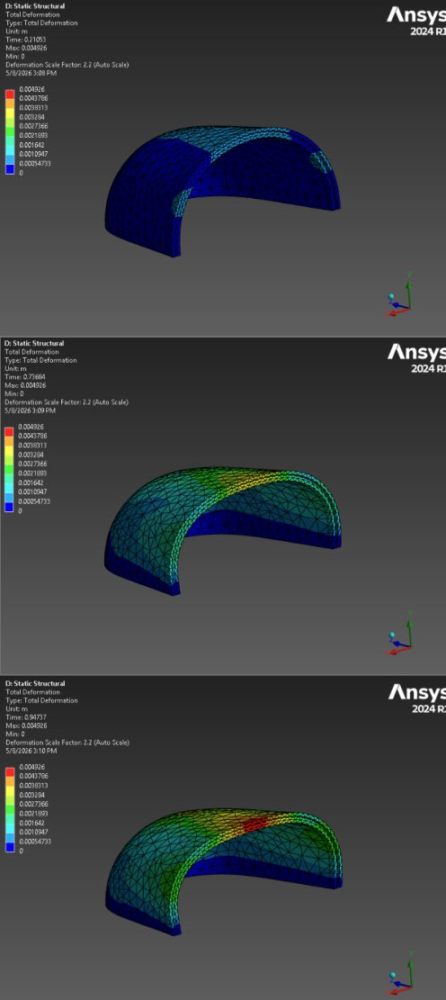
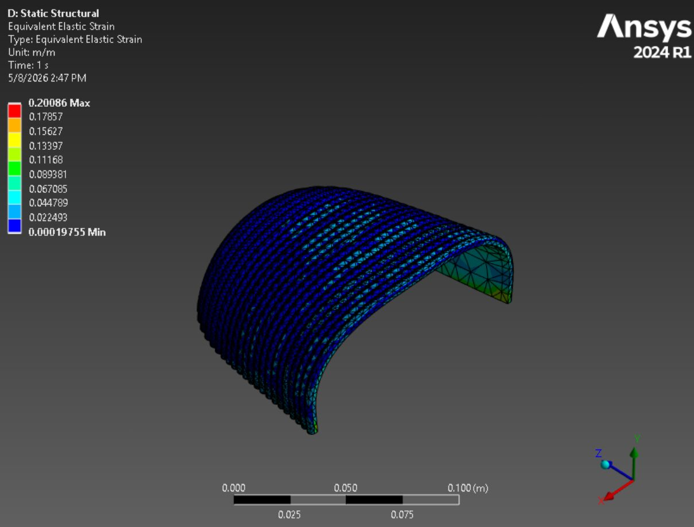

Overview

Designed a 3D-printed composite sandwich toe cover as a lightweight alternative to steel-toe boots, targeting ASTM F2413-18 compliance (2,500 lbf compression). Modeled three core geometries (square, honeycomb, and corrugated) in SolidWorks, all constrained to a constant thickness. Researched and compared TPU 95A, TPE, and PA-CF filaments across stiffness, yield strength, and cost, finding the TPU 95A / PA-CF sandwich to be substantially cheaper than steel at a fraction of the weight. Ran ANSYS static structural simulations evaluating deformation and factor of safety, with the corrugated TPU 95A – PA-CF design achieving the highest inside FOS of 4.39. Also used ANSYS ACP to model fiber orientation effects on a traditional carbon fiber / aluminum honeycomb wet layup baseline.

Lay Up
We used a carbon-fiber face-sheet sandwich with an aluminum honeycomb core as our baseline to study how ply orientation affects mechanical behavior and cost compared to cheaper 3D-printed alternatives. Materials were Axiom AX-5206 prepreg face sheets and a 2.1 F40 5052 CRIII aluminum honeycomb core, chosen for available validated property data and ease of future wet-layup fabrication. We tested two symmetric layups, [0/45/Al_core]_s and [0/90/Al_core]_s, to evaluate the influence of shear response on compression performance.
Square Core
We chose a square lattice pattern for the toe cover because it boosts impact and compression resistance while cutting material use. The lattice absorbs and distributes impact energy across interconnected ribs, reducing stress concentrations and the risk of fracture. The intersecting ribs increase bending stiffness by moving material away from the neutral axis, and the voids remove unneeded volume while keeping ribs aligned with primary load paths to preserve strength.

Honeycomb Core
We selected a honeycomb infill for its bio-inspired geometry, high strength-to-weight ratio, and superior stiffness compared with common infill patterns. The honeycomb was sketched on a flattened projection of the curved toe cover and then mapped back to the surface, producing slightly skewed, larger hexagons near the edges and standard hexagons where impacts are expected. We used a 2D honeycomb due to the cover's thin section and ease of implementation, though a 3D honeycomb could be explored for additional structural benefit.

Corrugated Core
We selected a corrugated core because it offers a lightweight, geometry-based way to increase stiffness, strength-to-weight ratio, and energy absorption in sandwich structures. Compared with grid, line, and honeycomb infills, corrugations provide continuous walls that guide forces through the part while leaving open space to reduce weight, making them a practical middle ground for manufacturability and structural difference. Design constraints (2 mm layer thickness) limited corrugation height and spacing, so we balanced wall thickness and spacing to retain support without increasing part thickness, cost, or discomfort.

Material Selection
Our material selection was driven by three customer-focused criteria: meet ASTM F2413-18, be lighter than steel, and keep manufacturing cost low for accessible retail pricing. Candidates included TPU 95A, TPE, PA-CF, aluminum honeycomb, and carbon-fiber prepreg, with steel used as the baseline; designs were tested as a 3D-printed sandwich and a traditional composite wet layup. For the 3D-printed sandwich we chose TPU 95A (or TPE as a lower-cost alternative) for the outer, impact-absorbing shell and PA-CF for the inner, load-bearing core because TPU offers ductility and energy absorption while PA-CF provides the highest stiffness and strength among printable materials; cost and manufacturability considerations favor 3D printing for rapid prototyping, while composites or injection/compression molding would be needed to scale production competitively.
FEA
Structural analysis was performed in ANSYS Mechanical with composite layup modeled in ANSYS ACP. The CAD was partitioned into named regions with local coordinate rosettes to control fiber orientation; plies of prepreg carbon and aluminum honeycomb core were stacked to test two laminate thicknesses (core thickness varied). A quasi-static 2500 lbf compressive load (ASTM F2413 C/75 requirement) was applied as a uniform surface load and the sole was modeled as a fixed displacement to replicate the compression test boundary conditions.

Results
We benchmarked against solid PA-CF and structural steel (steel inside FOS = 6.07), showing steel is over-designed and creating an opportunity to replace it with lighter composites. We simulated three-layer sandwiches (TPE/PA-CF/TPE and TPU95A/PA-CF/TPU95A) across four core geometries (solid, honeycomb, corrugated, square): TPE designs failed (inside FOS 0.387–0.860), while TPU95A designs gave much higher inside FOS (1.31–4.39) but poor total FOS (0.135–0.244) and large deformation. Of all tests, six designs passed overall FOS > 1.0 (B1, B3, D1–D4); the optimal overall design was B3 (0/90/Al core/90/0, 0.2" core), while D3 (TPU95A–PA-CF–TPU95A with corrugated core) produced the highest inside FOS and was selected for further analysis.

Alternative Methods
We validated design D3 (TPU 95A – PA-CF – TPU 95A, corrugated core) under angled drop scenarios (45°, 70°, 20°) using the same 2500 lbf quasi-static compression setup and fixed sole support as prior tests. Angled loads produced similar or better inside FOS values than the top-down case (inside FOS = 7.92, 5.82, 2.50 for angles 1–3), though total FOS and deformation varied—angle 3 (20°) produced the largest deformation and the lowest total FOS. Stress/strain fields show peak stresses near the fixed support and that PA-CF is the primary load-bearing layer while TPU absorbs and distributes impact energy. Compared with steel, D3 is far lighter (≈1/6 the mass) and substantially cheaper by weight.
Additional Analysis

